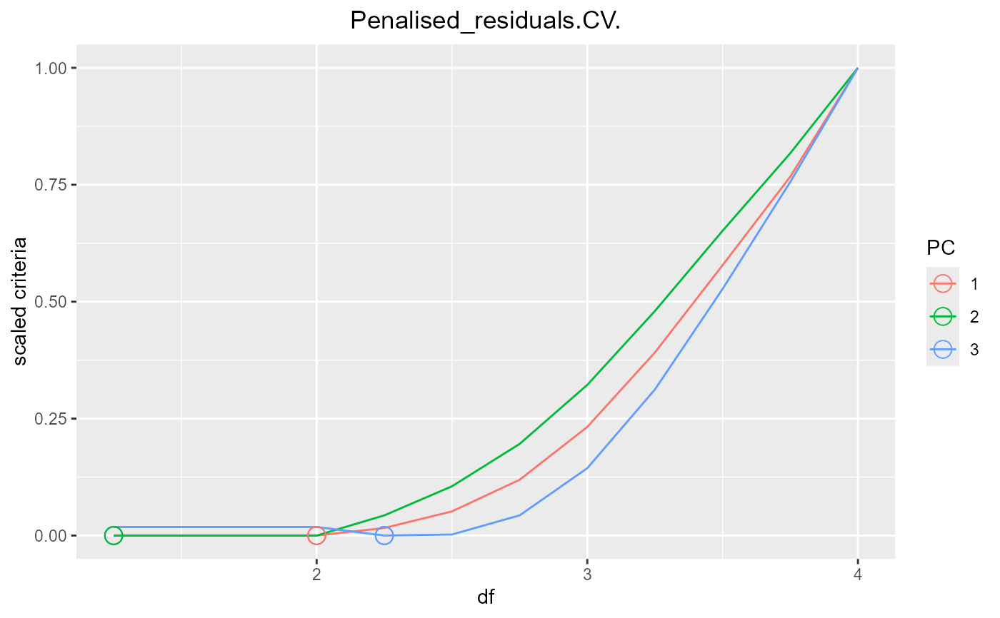

R/df_search.R
plot_param_evolution.RdPlot the evolution of 5 different fitting metrics (CV: Cross-Validation, GCV: Generalised Cross-Validation, AIC: Akaike Information Criterion, BIC: Bayesian Information Criterion, AICc: Akaike Information Criterion Corrected for small sample size) over all possible df for each eigenSpline generated by get_param_evolution.
plot_param_evolution(paramSpace, scaled = FALSE)
| paramSpace | A list of n matrices (n being the number or eigenSplines) as generated by |
|---|---|
| scaled | (bool) If TRUE, the value of each eigenSpline fitting parameter are scaled between 0 and 1. Default is TRUE. |
A list of ggplot2 plotObjects, one plot per fitting parameters. All results can be plotted using do.call(grid.arrange, returnedResult)
Graphical implementation with santaR_start_GUI
Other DFsearch: get_eigen_DFoverlay_list,
get_eigen_DF,
get_eigen_spline,
get_param_evolution,
plot_nbTP_histogram
## 8 subjects, 4 time-points, 3 variables inputData <- acuteInflammation$data[0:32,1:3] ind <- acuteInflammation$meta$ind[0:32] time <- acuteInflammation$meta$time[0:32] eigen <- get_eigen_spline(inputData, ind, time, nPC=NA, scaling="scaling_UV", method="nipals", verbose=TRUE, centering=TRUE, ncores=0)#> nipals calculated PCA #> Importance of component(s): #> PC1 PC2 PC3 #> R2 0.9272 0.06606 0.006756 #> Cumulative R2 0.9272 0.99324 1.000000#>paramSpace <- get_param_evolution(eigen, step=0.25) plotList <- plot_param_evolution(paramSpace, scaled=TRUE) plotList[1]#> [[1]]#>#do.call(grid.arrange, plotList )